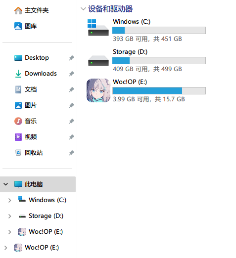

钱塘雨，些许浮躁
习学不了一点，水点东西：
《给移动硬盘自定义一个图标》
只在U盘上做了，硬盘按道理也适用
准备
如果不需要准备图标，直接跳过，转到正文
图标需要ico格式，分辨率建议512x512，毕竟高清
如果没有格式工厂，那么这里就够用
如果你还需要200w的圆角效果，那么这里也够用
所以现在手上就有一个ico格式的图标了
正文
在要换logo的设备里里新建一个txt文件（只要是流式文本文件就可以，不带拓展名也可以）
然后用记事本或者别的文本编辑器打开，在里面加入以下内容
1 | [Autorun] |
其中icon后面的文件名是上面手上的ico文件的名字，不管叫什么，两个地方统一即可
然后保存
出来之后把这个文件改名为 autorun.inf
记得拓展名是 inf
然后把ico图标和这个inf文件放在一起
然后弹出U盘重新插入，那么就得到了换过图标的U盘了，效果大概像下面那样，据说配合名字食用效果更佳

进阶
还记得那两个ico和inf文件吗，直接在根目录下显得格格不入
或者手滑删掉就gg了
这里就可以选中这两个文件，然后右键-属性-隐藏-确定
进阶Plus
还有一种情况就是电脑默认显示隐藏文件，那么上面的方法也有可能gg
所以这里要把文件改为系统级的隐藏（这个也可以通过文件夹选项设置出显示出来，默认系统保护的隐藏文件不会显示）
所以就需要再进一步，我们需要一条命令 attrib
这里默认你有一定的关于路径的常识，你cd到或者不cd到U盘路径下都行
反正都是一种用法，你要做的就是进入cmd或终端
如果工作目录就是当前设备根目录，那么只需要分别执行
1 | attrib .\favicon.ico +s +h |
就结束了，如果分不清工作目录在哪，那么直接就是下面这样
工作目录不在指定设备的，且假设你的设备盘符是 F，是哪个就改成哪个，这个盘符很重要，就是C、D、E盘的那个盘符，这样的话就执行
1 | attrib F:\favicon.ico +s +h |
这样也就结束了
end,
PS：
你以为隐藏文件只用在这里？
当然可以隐藏别的文件啦，方法也是一样，只要改一下中间的文件路径就好了
所以这里还有取消隐藏的方法，那就是把上面的 +s +h中的 + ，改成 - 就好了
也就是
1 | attrib #### -s -h |
中间的井字就换成文件路径就好啦
如是。
End.